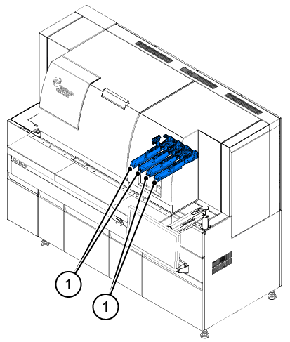
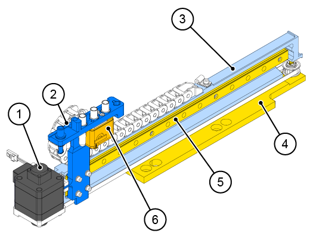
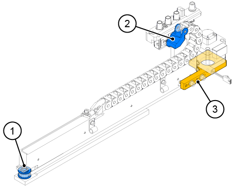
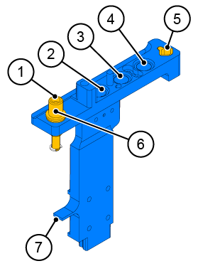
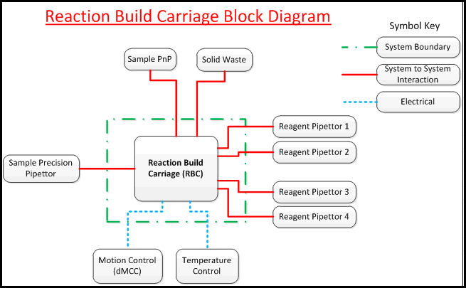

Operating Principles for the Reagent Shuttles
This topic includes information about the theory of operation, or operating principles, for the reagent shuttle assemblies.
| Table of Contents |
|---|
| Function |
| Location |
| Operational Overview |
| Component Locations and Functions |
| Component and Interaction Block Diagram |
| Interacting and Intersecting Devices |
Function
The purpose of the reagent shuttle, which is sometimes referred to as the reagent carriage or the reaction build carriage, is to present vessels to reagent pipettors, the precision sample pipettor, and the sample and incubator pick-and-place (PnP) assemblies for the purpose of building assay tests. The functions include, but are not limited to:
- Receiving and storing sample vessels (SVs)
- Receiving empty reaction vessels (RVs) in which the reactions are built
- Receiving empty dilution vessels (DVs) for the purposes of dilution
- Heating all vessels through the two-position heater attached to the vessel carriage
- Moving vessels to the reagent pipettor for chemical/reagent additions
- Moving vessels to the precision pipettor for sample transfer and dilution
- Moving vessels to and from the sample and incubator PnPs
Location
The reagent shuttles are located in the center of the instrument beneath the reagent pipettors, sample and incubator PnPs, and the precision sample pipettor.

| 1 | Reagent shuttles |
Operational Overview
The reagent shuttles perform the following functions.
Note: Vessel movement depends on the assay being performed and will vary depending on reaction requirements and scheduling.
- The reagent shuttle receives an SV from the sample PnP.
- The reagent shuttle receives an empty RV, in which reactions are "built," from the sample PnP.
- The reagent shuttle receives an empty DV from the sample PnP for making dilutions, if applicable.
- The reagent shuttle moves to a position beneath the reagent pipettor for reagent additions and ultrasonic mixing.
- The reagent shuttle moves to a position beneath the precision sample pipettor for sample addition and tip mixing (push-pull command).
- The reagent shuttle moves to a position beneath the sample PnP or incubator PnP for vessel transfer
- SV to waste or to the sample wheel
- RV to the incubator wheel
- DV to waste
Component Locations and Functions
The following illustrations show the locations of components for the reagent shuttle.

| 1 | Motor assembly |
| 2 | Vessel carriage |
| 3 | Frame |
| 4 | Base |
| 5 | Linear rail |
| 6 | Vessel carriage heater |

| 1 | Idler pulley |
| 2 | E-chain mount |
| 3 | Motor mount |

| 1 | Precision sample pipettor alignment feature |
| 2 | Sample vessel (SV) carriage recess |
| 3 | Reaction vessel (RV) carriage recess |
| 4 | Dilution vessel (DV) carriage recess |
| 5 | Reagent pipettor alignment feature |
| 6 | Pick-and-place (PnP) alignment pin |
| 7 | Home flag |
| Component | Description and Function |
|---|---|
| E-Chain Mount | Mounts the E-chain to the vessel carriage. A cutout groove for aligning the cable clamp to the position heater cable to the heater. |
| Motor Mount | Connects and aligns the motor to the frame. A pocket for the compression spring to tension the drive belt. |
| Idler Pulley | Uses NHBB bearings and 18G aluminum Gates GT2 3mm pitch pulley. |
| Motor Assy | Stepper motor drives the belt for movement of the shuttle/carriage along the linear rail. |
| Vessel Carriage Heater | Preheats vessels and reagents during the reaction build. 6.0W, 24VDC power source. Operating range 36-39C (setpoint @ 37.5C) |
| Vessel Carriage | Holds vessels (SV, RV, and DV). Contains all alignment features for aligning to the reagent pipettor, precision pipettor, and sample and incubator PnPs. The home flag is machined into the carriage. The heater mounts to the vessel carriage. |
| Linear Rail | The shuttle carriage fastens to the linear rail "truck" and moves to position vessels for the addition and mixing of reagents and samples. |
| Base Assy | Mounts the reagent shuttle to the chassis. The assembly includes the idler pulley shaft for slip-fit mounting of the idler pulley |
| Frame | The main body in the reagent shuttle. Mounts to the base, linear rail, and motor mount. |
| Precision Pipettor Alignment Feature | Alignment location for the precision sample pipettor. |
| SV | Sample vessel from the sample wheel. |
| RV | Reaction vessel for building the reaction. |
| DV | Dilution vessel for creating a dilution of the sample. |
| Reagent Pipettor Alignment Feature | The alignment location for the reagent pipettor. |
| Home Flag | Triggers the home sensor to establish when the shuttle/carriage is at the home position. |
| PnP Alignment Pin | The alignment location for the sample and incubator pick and place (PnP) assemblies. |
Component and Interaction Block Diagram
See the component and interaction diagram below for the reagent shuttle, also referred to as the reaction build carriage:

Interacting and Intersecting Devices
The reagent shuttles interact with the following devices:
- Sample PnP
- Precision sample pipettor
- Reagent pipettors
- Incubator PnP
- Solid waste